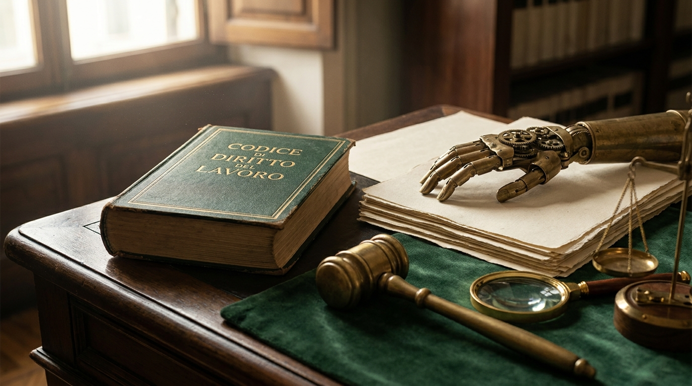

Licenziamenti e intelligenza artificiale: vietate le decisioni automatiche
I decreti attuativi della legge 132/2025 vietano i licenziamenti decisi in via automatica da sistemi di intelligenza artificiale, imponendo la supervisione umana e prevedendo sanzioni. La novità interessa direttamente i datori di lavoro che impiegano algoritmi nei processi decisionali sul personale e rafforza le tutele del lavoratore contro le scelte algoritmiche non controllate.

Il quadro
Il Consiglio dei ministri ha approvato i decreti legislativi attuativi della legge 132/2025, la cornice nazionale sull'uso dell'intelligenza artificiale. Tra le previsioni più rilevanti per il rapporto di lavoro c'è il divieto di affidare a un sistema automatizzato la decisione finale sul licenziamento di un dipendente.
In altre parole: l'algoritmo può supportare l'analisi, ma non può chiudere la partita al posto di una persona. La scelta di interrompere un rapporto di lavoro deve restare in capo a un decisore umano, che ne risponde.
Inquadramento normativo
La disciplina si inserisce nel solco del Regolamento UE 2024/1689 (il cosiddetto AI Act), che classifica come "ad alto rischio" i sistemi di IA usati per la gestione del personale, comprese le decisioni su assunzione, promozione e cessazione del rapporto.
Il principio non è del tutto nuovo. L'articolo 22 del Regolamento UE 2016/679 (GDPR) già riconosce all'interessato il diritto a non essere sottoposto a una decisione basata unicamente su un trattamento automatizzato che produca effetti giuridici significativi. I nuovi decreti rendono questo principio operativo nel diritto del lavoro, con un divieto esplicito e con un sistema sanzionatorio.
Il controllo è affidato a soggetti tecnici già esistenti: l'Agenzia per l'Italia digitale (Agid) e l'Agenzia per la cybersicurezza nazionale (Acn), chiamate a vigilare sull'adozione e sull'uso conforme dei sistemi. La data di riferimento per l'entrata in vigore delle nuove regole è fissata all'11 giugno 2026.
Va segnalata anche la previsione di un equo compenso per i professionisti che impiegano strumenti di IA nella propria attività: un riconoscimento del valore della prestazione intellettuale, che non viene svuotato dall'automazione.
Implicazioni pratiche
Per il datore di lavoro che già utilizza software di valutazione del personale o strumenti di scoring delle performance, il messaggio è chiaro: l'output dell'algoritmo non è un verdetto. È un dato. La decisione va istruita, motivata e firmata da chi ha la responsabilità di gestire il personale.
Un licenziamento intimato sulla base di un punteggio automatico, senza una valutazione umana documentata, rischia di essere illegittimo. A ciò si aggiunge l'esposizione alle sanzioni previste dai decreti e ai possibili profili di responsabilità in materia di protezione dei dati.
Per il lavoratore, la norma rafforza una tutela concreta. Davanti a un provvedimento espulsivo, diventa legittimo chiedere se e come un sistema automatizzato abbia influito sulla decisione, e pretendere che vi sia stata una verifica umana effettiva, non di facciata.
Un punto delicato riguarda la differenza tra supervisione "formale" e "sostanziale". Non basta che un dirigente apponga una firma su quanto deciso dalla macchina: la supervisione richiede che la persona possa comprendere, valutare e, se necessario, ribaltare l'esito dell'algoritmo. È su questo terreno che si giocheranno i futuri contenziosi.
Cosa fare in concreto
- Mappa i sistemi in uso. Verifica se nei processi HR aziendali operano strumenti di IA che incidono su assunzioni, valutazioni o cessazioni del rapporto.
- Documenta la supervisione umana. Per ogni decisione rilevante, conserva traccia scritta della valutazione del decisore umano e delle ragioni che la sostengono.
- Aggiorna le informative e le procedure. Allinea l'informativa privacy ai trattamenti automatizzati e definisci una procedura interna che escluda decisioni espulsive interamente algoritmiche.
- Forma chi decide. I responsabili del personale devono saper interpretare e contestare l'output dei sistemi, non limitarsi a recepirlo.
- Pianifica la compliance entro giugno 2026. Consigliamo di avviare l'adeguamento con anticipo, evitando interventi affrettati a ridosso della scadenza.
L'adozione dell'IA nei processi aziendali non è vietata, ma è ora accompagnata da un perimetro preciso. Chi gestisce personale farà bene a considerare l'algoritmo come uno strumento di supporto, mai come l'autore della decisione.
---
*Contributo informativo a cura di Tamburro & Partners - Avv. Giuseppe Tamburro. Non costituisce parere legale.*
Ogni storia di lavoro ha i suoi tempi.
Se gestisci HR e vuoi un confronto su contenzioso, ispezioni o licenziamenti, scrivi allo studio. Ti rispondiamo entro un giorno lavorativo.